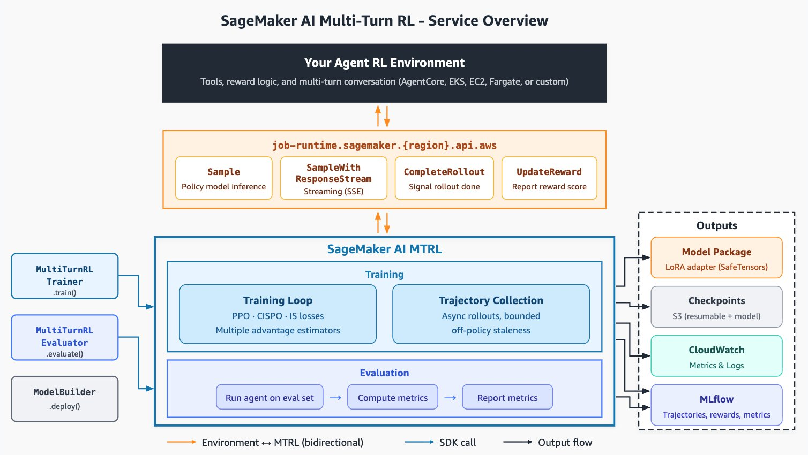

Model customization and multi-turn RL. Most off-the-shelf frontier models under-perform on a given agentic system because of the environment-specific complexities they were never trained against. Customizing a model changes that: it bakes in your agent/harness/environment-specific behavior, gives you control over output quality and style, and - by virtue of running a smaller model - delivers faster, cheaper inference. Multi-turn reinforcement learning (RL) is how you get there: it trains an agent to make good decisions across a sequence of steps, not just in a single moment.
MTRL on Amazon SageMaker AI. This hands-on tutorial provides a practical introduction to multi-turn RL fine-tuning for LLMs on Amazon SageMaker AI. We will run end-to-end training jobs, standalone evaluations, and learn best practices to actually maximize the benefits of MTRL for your agentic environment. You will train the GPT-OSS-20B model to drive an agent hosted on Amazon Bedrock AgentCore, using the aircraft_inspection task from SOP-Bench as a concrete, reward-scored environment.

SageMaker AI MTRL offers:
- A modular agent-environment interface that keeps integration low-code while giving you full algorithmic control. Custom rewards, custom tool loops, and multi-turn conversation shapes are all yours to define.
- Serverless execution that simplifies infrastructure concerns, so you get production-scale agentic RL at per-token pricing without provisioning or managing GPU clusters.
- Asynchronous rollout and trajectory collection with bounded off-policy staleness. Generation and gradient updates run in parallel without drifting too far from the current policy, which speeds up training.
- A native algorithm library spanning Proximal Policy Optimization (PPO), Clipped Importance Sampling Policy Optimization (CISPO), and importance-sampling (IS) losses, paired with multiple group-based advantage estimators (GRPO, GRPO pass@k, RLOO, and more) - covering the choices most relevant to multi-turn agentic RL.
- Sequence-extension training to keep wall-clock down on long multi-turn trajectories.
- Trajectory and reward observability in MLflow managed by Amazon SageMaker AI, so you can read what your agent did turn by turn, and across training steps.
- Evaluation jobs that report reward, pass@k, trajectory metrics, and more before you deploy to a SageMaker AI endpoint or Amazon Bedrock.
Tutorial Outline
Five parts that take you end to end: the foundations of multi-turn RL, then a hands-on path - set up and deploy your agent, preprocess data and launch training, apply best practices to get MTRL working for your task, and finally evaluate and deploy the fine-tuned model.
-
Part 1 Motivation & Foundations Talk
Why single-turn training falls short for agentic systems, and the core ideas behind multi-turn RL: framing an agentic task as a sequence of decisions, the multi-turn rollout, reward design (trajectory-level, turn-level, composite), and the GRPO family of algorithms. Grounds the hands-on parts that follow.
-
Part 2 Environment Setup: Agent & Rollout Deployment Hands-on
How the agent participates in the training loop: SageMaker AI sends a prompt, your agent calls the policy model, takes actions in your environment, and reports a reward. We implement the SOP-Bench rollout agent and deploy it to Amazon Bedrock AgentCore, and cover how to integrate any agent or environment - managed on AgentCore or bring-your-own. See Preparing your agent.
Lab: Implement and deploy the rollout agent to AgentCore -
Part 3 Data Preprocessing & Training Job Submission Hands-on
Turn a task into an RFT prompt dataset and upload it to S3, then configure and launch a multi-turn RL training job with the
Lab: Preprocess prompts and launch an end-to-end training jobMultiTurnRLTrainerSDK. Choose hyperparameters (batch size, group size, rollout concurrency, algorithm), submit the job against your deployed agent, and watch reward and token curves in MLflow. -
Part 4 Best Practices Discussion
What actually makes MTRL work: build an environment that is cheap, reproducible, and representative; set up a trustworthy external evaluation before you train; design a reward that reflects real task success without inviting reward hacking; manage what changes across turns and the turn budget; and monitor the right training metrics. See Best practices for multi-turn RL.
-
Part 5 Evaluation & Deployment Hands-on
Run your agent against a held-out prompt set with the
Lab: Evaluate on held-out prompts and deploy the fine-tuned modelMultiTurnRLEvaluatorto report reward, pass@k, and trajectory metrics, and compare the fine-tuned model against its base. Then deploy the resulting Model Package - to a SageMaker AI inference endpoint or by importing into Amazon Bedrock. See Model evaluation and Model deployment.
Materials
All notebooks, environment code, reward function templates, slides, and demo videos will be provided via a public GitHub repository. Materials will be posted here closer to the tutorial date. To get started on the day, complete the starter survey below.
-
Starter Survey
A quick survey to complete before you begin the hands-on labs.
-
Slides
Tutorial slide decks (Google Drive folder).
Resources
-
MTRL Launch Announcement
Multi-turn reinforcement learning on Amazon SageMaker AI - the official launch announcement.
-
MTRL User Guide
Amazon SageMaker AI developer guide for multi-turn RL fine-tuning.
-
Best Practices for Multi-Turn RL in Amazon SageMaker AI
AWS Machine Learning Blog post on best practices for multi-turn reinforcement learning.
More from the team
-
Customizing Models on Amazon SageMaker AI
Developer guide overview of model customization options on SageMaker AI.
-
Reinforcement Fine-Tuning on Amazon Bedrock: Best Practices
AWS Machine Learning Blog post on RFT best practices on Amazon Bedrock.
-
Fine-tune NVIDIA Nemotron-3 Models with SageMaker AI Serverless Model Customization
AWS Machine Learning Blog post on serverless model customization with SageMaker AI.
Organizers
The organizers lead the research and development of model customization services on Amazon SageMaker AI and Amazon Bedrock, and launched techniques like Reinforcement Fine-Tuning (RFT) and Multi-Turn RL (MTRL), enabling developers to customize leading open-source models such as Qwen3.6-27B, Gemma-4-31B-it, and GPT-OSS-20B.